МИНИСТЕРСТВО ТРАНСПОРТНОГО СТРОИТЕЛЬСТВА
ТЕХНИЧЕСКИЕ УКАЗАНИЯ
ПО ПРОЕКТИРОВАНИЮ
И ВОЗВЕДЕНИЮ
ЗЕМЛЯНОГО ПОЛОТНА
АВТОМОБИЛЬНЫХ ДОРОГ
В РАЙОНАХ ИСКУССТВЕННОГО
ОРОШЕНИЯ ЗАСУШЛИВОЙ ЗОНЫ
ВСН 47-73
Минтрансстрой
Утверждены Техническим управлением Министерстав
транспортного строительства 11 апреля 1973 г
Приказ № 4
ОРГТРАНССТРОЙ
Москва 1973
Настоящие «Технические указания по проектированию и возведению земляного полотна автомобильных дорог в районах искусственного орошения засушливой зоны» разработаны в целях повышения качества сооружения земляного полотна автомобильных дорог в районах искусственного орошения V дорожно-климатической зоны.
«Технические указания» относятся к дорогам общей сети с усовершенствованными покрытиями и разработаны в развитие СНиП II-Д.5-72 «Автомобильные дороги. Нормы проектирования», СНиП III-Д.5-73 «Автомобильные дороги. Правила производства работ», «Указаний по проектированию земляного полотна железных и автомобильных дорог» СП 449-72 (М., Стройиздат, 1973), а также «Инструкции по проектированию дорожных одежд нежесткого типа» ВСН 46-72 (М., «Транспорт», 1973).
Во избежание дублирования действующих нормативно-технических документов в «Технические указания» включены только специфические требования к земляному полотну и правила его проектирования и возведения, определяемые региональными особенностями условий районов искусственного орошения.
При составлении настоящих «Технических указаний» были использованы «Технические указания по проектированию и возведению земляного полотна автомобильных дорог в районах искусственного орошения засушливой зоны» ВСН 47-60 (М., Оргтрансстрой, 1961).
При разработке настоящей редакции «Технических указаний» были учтены результаты научно-исследовательских и опытно-экспериментальных работ, проведенных Союздорнии и его Среднеазиатским и Казахским филиалами в период с 1960 до 1972 гг., а также опыт проектирования, строительства и эксплуатации автомобильных дорог в районах искусственного орошения Средней Азии и Казахстана, накопленный в последние годы дорожными организациями. Был учтен также опыт практического применения «Технических указаний» ВСН 47-60.
При применении настоящих «Технических указаний» необходим всесторонний учет местных условий и опыта проектирования, строительства и эксплуатации дорог, ранее построенных как в данном районе, так и в других районах с аналогичными условиями.
«Технические указания» составили кандидаты технических наук Ю. Л. Мотылев (Союздорнии, ответственный исполнитель), Ю. В. Бутлицкий и инженеры О. А. Сяпич (Среднеазиатский филиал Союздорнии) и А. М. Каменев (Казахский филиал Союздорнии).
При окончательном редактировании «Технических указаний» учтены замечания Главтранспроекта Минтрансстроя, Министерства строительства и эксплуатации автомобильных /дорог Узбекской ССР, Минавтодора Казахской ССР.
Учтены также замечания д-ра техн. наук А. М. Кривисского, в соответствии с которыми уточнены таблицы расчетной влажности и прочностных показателей грунтов.
|
СССР |
Ведомственные |
ВСН 47-73 |
|
Минтрансстрой |
||
|
Технические указания по проектированию и возведению земляного полотна автомобильных дорог в районах искусственного орошения засушливой зоны |
Взамен «Технических указаний по проектированию и возведению земляного полотна автомобильных дорoг в районах искусственного орошения засушливой зоны» ВСН 47-60 |
1.1. Орошаемые территории Средней Азии и Казахстана входят в V дорожно-климатическую зону.
Для дифференциации расчетных значений влажности, модулей упругости и прочностных характеристик грунтов (см. разд. 6), V дорожно-климатическую зону разделяют на северную и южную части, граница между которыми проходит примерно по линии Кизляр-Нукус-Чимкент. В южной части V зоны промерзание грунтов земляного полотна, как правило, незначительно (глубина промерзания не превышает 50 - 60 см) и непродолжительно или совсем отсутствует. Северная часть зоны характеризуется более глубоким и длительным промерзанием.
1.2. При проектировании дорог в засушливой зоне орошаемые территории необходимо разделять по характеру поверхностного стока и степени увлажнения местности в соответствии с нормами проектирования автомобильных дорог (СНиП II-Д.5-72).
Постоянно орошаемые территории, а также территории, подлежащие освоению и орошению в течение межремонтного срока службы дорожной одежды, следует относить к 3-му типу местности по характеру увлажнения.
|
Внесены
Государственным |
Утверждены
Техническим |
Срок введения |
2.1. Расположение трассы вновь строящейся дороги на территории орошаемых земель следует устанавливать в первую очередь на основе общих требований трассирования дорог, с учетом задач автомобильных перевозок, перспектив развития экономики районов, прилегающих к дороге, наличия существующих и проектируемых путей сообщения, необходимости соединения начального и конечного, а также промежуточных пунктов по кратчайшему направлению.
Наряду с этим необходимо стремиться к всемерному сокращению использования площади плодородных орошаемых земель под строительство дороги, а также количества пересечений ею ирригационных сооружений.
Основное внимание при проложении трассы следует уделять одному из главнейших технико-экономических требований - обеспечению устойчивости земляного полотна в условиях искусственного орошения, вызывающего повышение уровня грунтовых вод и создающего возможность подтопления земляного полотна. Следует по возможности обходить бессточные понижения, участки местности, па которых возможно заболачивание территории поверхностными и поливными водами и наблюдается близкий уровень грунтовых вод.
Во всех случаях наиболее рациональное расположение трассы и ее отдельных участков устанавливают сравнением вариантов.
2.2. Оросительные системы в засушливой зоне включают*:
а) оросительную сеть (постоянную и временную);
б) водосборно-сбросную сеть;
в) коллекторно-дренажную сеть;
г) гидротехнические сооружения.
Постоянная оросительная сеть слагается из магистральных каналов, его ветвей и распределителей различных порядков. Постоянная оросительная сеть проектируется в земляном русле с одеждой или без нее (открытая сеть), в лотках различного очертания (лотковая сеть), в трубах (трубчатая сеть). В состав временной оросительной сети входят временные оросители, транспортирующие и поливные трубопроводы и чековые валики.
В водосборно-сбросную сеть входят предохранительные и концевые сбросы и водосборные каналы различного порядка.
Коллекторно-дренажная сеть состоит из первичных дрен и коллекторов открытого или закрытого типа.
_____________
* СНиП II-И.3-62 «Сооружения мелиоративных систем. Нормы проектирования».
2.3. Строительство дорог общей сети вдоль магистральных и распределительных каналов не рекомендуется; допускается в виде исключения на отдельных участках постройка дорог IV - V категорий.
На таких участках необходимо учитывать рельеф местности, конструкцию канала и расход воды в нем, условия отвода воды от дороги, наличие и расположение подъездных дорог к населенным пунктам, необходимость устройства искусственных сооружений при выборе того или иного решения, возможность увеличения высот насыпи при приближении дороги к каналу, условия эксплуатации как дороги, так и канала, возможность сельскохозяйственною использования земли в полосе между каналом и дорогой (п. 4.2).
2.4. При прохождении дороги по пониженным участкам рядом с каналом водосборно-сбросной сети расстояние между внешними (соседними) бровками канала и водоотводной канавы должно быть не менее 4 - 5 м. Не допускается включать водоотводные канавы в водосборно-сбросную сеть (равно как и использовать их в качестве распределителей)
2.5. Возведение земляного полотна рядом с дренами и коллекторами ирригационной сети открытого типа на участках с близким уровнем грунтовых вод не рекомендуется на дорогах I - III категорий и допускается на дорогах IV - V категорий лишь при условии надежного обеспечения стока воды из дрены или коллектора.
2.6. На участках с закрытой коллекторно-дренажной сетью рационально располагать земляное полотно вдоль закрытых дрен и коллекторов, если направление последних совпадает с общим направлением трассы дороги. В случае, когда такое расположение земляного полотна вызывает удлинение трассы, окончательное решение принимают на основе технико-экономического сравнения вариантов
3.1. В районах искусственного орошения возводят, как правило, насыпи, высоту которых устанавливают из условия предохранения верхней части земляного полотна от избыточного увлажнения грунтовыми и поверхностными водами, а также обеспечения морозоустойчивости конструкции (преимущественно в северной части V дорожно-климатической зоны).
3.2. Обязательным требованием к устойчивости земляного полотна и дорожной одежды является сохранение влажности не выше расчетом в данных условиях (табл. 1) и плотности не ниже требуемой (п. 6.1) в верхних слоях земляного полотна (в пределах не менее 50 см ниже основания дорожной одежды)
Расчетные влажности грунтов земляного полотна
|
Грунты |
Расчетные влажности в долях от границы текучести |
||
|
Типы местности |
|||
|
1-й |
2-й |
3-й |
|
|
Супесь легкая |
0,55-0,57 |
0,6-0,62 |
0,65-0,7 |
|
Суглинки и глины |
0,6-0,65 |
0,65-0,7 |
0,7-0,75 |
|
Супеси пылеватые, суглинки пылеватые |
0,62-0,67 |
0,67-0,72 |
0,72-0,77 |
Примечания. 1. Меньшие значения относительных влажностей следует принимать для южной части V дорожно-климатической зоны, большие - для северной.
2. Данные таблицы уточнены на основе исследований Среднеазиатского и Казахского филиалов Союздорнии.
Это обеспечивается надлежащим возвышением низа дорожной одежды над поверхностью земли и расчетным уровнем грунтовых вод (пп. 3.14, 3.15 и 3.16), а в северной части V дорожно-климатической зоны также устройством морозозащитного слоя (п. 3.18).
3.3. На орошаемых территориях расчетный уровень следует устанавливать по графикам сезонных колебаний грунтовых вод, составленным на основании многолетних данных организаций, ведущих гидрогеологические наблюдения в районе трассы дороги.
В качестве расчетного принимают наивысший за период между капитальными ремонтами дорожной одежды уровень грунтовых вод, соответствующий 5-процентной вероятности его превышения при капитальных типах покрытий и 10-процентной вероятности для дорог с усовершенствованными облегченными и переходными типами покрытий (приложение 1).
3.4. При наличии в районе проектируемой дороги в сходных природных условиях гидрогеологических станции или постов расчетный уровень грунтовых вод определяют по формуле
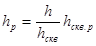
где 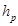
- расстояние от поверхности земли до уровня грунтовых вод на трассе;
- то же, в тот же день в скважине, для которой имеется ряд наблюдений;
- расчетный уровень грунтовых вод в скважине по данным многолетних наблюдений.
3.5. Расчетный уровень грунтовых вод в скважине определяют по формуле
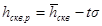
где 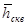
s - среднеквадратическое отклонение от среднемноголетнего уровня;
t - нормированное отклонение уровня грунтовых вод от его среднемноголетнего значения при заданной вероятности и известном числе лет наблюдений.
Величину нормированного отклонения находят в зависимости от (п - 1) по таблице приложения 2.
Среднеквадратическое отклонение находится по формуле
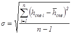
где hскв.i - уровень грунтовых вод за i-ый год;
п - число лет наблюдений.
При отсутствии данных многолетних наблюдении расчетный уровень устанавливают на основе изыскательских данных, но с учетом сезонных и многолетних колебаний уровня грунтовых вод в ближайших изученных районах, а также возможных последующих изменений этого уровня, связанных с освоением и орошением земель.
3.6. Как правило, в качестве расчетного следует принимать наивысший за период между капитальными ремонтами дорожной одежды зимне-весенний устойчивый (продолжительностью стояния не менее 20 суток) уровень грунтовых вод, за исключением участков, на которых наблюдается выклинивание грунтовых вод в летний период.
В частности, рекомендуется принимать в качестве расчетного уровень грунтовых вод, наблюдаемый в следующие сроки:
а) на территориях с близким залеганием минерализованных грунтовых вод и их затрудненным подземным стоком - в марте - апреле;
б) на территориях, где проводятся зимние и ранневесенние промывки полей, - в период непосредственно после промывок (1 - 2 недели); при отсутствии данных стационарных наблюдений допускается ориентировочно принимать расчетный уровень грунтовых вод на глубине 0,5 - 0,6 м от поверхности земли;
в) на рисовых полях:
при необеспеченном подземном стоке грунтовых вод - в марте - апреле;
при обеспеченном стоке - в июле - августе.
На основании многолетних данных выбирают наивысший уровень с заданной вероятностью, наблюдавшийся в соответствующий период года*.
Если данные гидрогеологических наблюдений позволяют установить уровень грунтовых вод в некоторых пределах, то рекомендуется в понижениях рельефа принимать нижний предел уровня (меньшую глубину залегания грунтовых вод), на повышениях - верхний.
__________
* При расчете на морозоустойчивость (приложение 2) в качестве расчетного необходимо принимать уровень грунтовых вод в предзимний период.
3.7. На неорошаемых территориях, подлежащих освоению и орошению в период эксплуатации дороги, расчетный уровень грунтовых вод рекомендуется принимать по перспективным данным органов водного хозяйства с учетом прогноза изменений естественного уровня грунтовых вод, связанных как с орошением и промывками, так и с дренажными мероприятиями.
В частности, рекомендуется в качестве расчетного принимать:
а) при глубоком залегании грунтовых вод и отсутствии необходимости промывки грунтов - «критический горизонт» грунтовых вод, т. е. наивысший, допустимый с точки зрения предохранения почв от засоления;
б) на участках, где предполагаются промывки грунтов, - уровень грунтовых вод, который может возникнуть после промывок (ориентировочно на хлопковых полях 0,5 - 0,6 л oт поверхности земли);
в) на территориях с близкими грунтовыми водами наивысший уровень между капитальными ремонтами дорожной одежды (в соответствии с п. 3.3).
3.8. На участках расположения дорог в непосредственной близости от ирригационных сооружений необходимо учитывать их влияние па уровень грунтовых вод, который повышается вблизи оросительных и водосборно-сбросных каналов и понижается вблизи дрен и коллекторов.
3.9. При постройке дороги поблизости от магистрального или распределительного каналов необходимо усыновить наивысший уровень грунтовых вод, связанный с фильтрацией воды из канала (фильтрационный максимум уровня грунтовых вод).
Фильтрационный максимум уровня грунтовых вод устанавливают бурением скважин по линии, перпендикулярной к оси канала, в период его работы с наибольшей нагрузкой. Скважины рекомендуется закладывать по схеме 0-5-8-12-17-23-35-50 м от бровки канала.
При установлении уровня воды в скважинах необходимо учитывать рельеф местности Наибольшее внимание следует уделять участкам, проходящим в понижениях.
Возможно приближенное установление фильтрационного максимума уровня грунтовых вод по данным о максимальном уровне воды в канале и ее расходе с использованием значений среднего уклона кривой депрессии па различных расстояниях от канала. Примеры значений среднего уклона кривой депрессии в некоторых типичных случаях приведены приложении 3.
3.10. После определения фильтрационного максимума уровня грунтовых вод его сравнивают с естественным (п. 3.6) и в качестве расчетного принимают наивысший из них. Поскольку влияние фильтрации воды из канала на уровень грунтовых вод уменьшается по мере удаления рассматриваемой точки от канала, наиболее выгодное расположение дорог и по отношению к каналу можно установить в каждом случае сравнением вариантов (разд. 4). При этом фильтрационный максимум уровня грунтовых вод рекомендуется учитывать в тех случаях и на тех расстояниях от канала, где этот максимум превышает естественный не менее чем на 10 - 15 см.
3.11. При проектировании дороги рядом с действующими дреном или коллектором учитывают понижение естественного уровня грунтовых вод этими сооружениями и образование кривой депрессии с уклоном в сторону дрены или коллектора. Расчетный уровень грунтовых вод в этом случае определяют по формуле
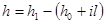
где h - глубина грунтовых вод под земляным полотном по линии внешней кромки покрытия;
h1 - глубина коллектора;
h0 - расчетная глубина воды в коллекторе;
l - расстояние от линии уреза воды в коллекторе до кромки покрытия;
i - средний уклон кривой депрессии.
3.12. Для легких пылеватых, тяжелых пылеватых суглинков и тяжелых пылеватых супесей в условиях равнинных пониженных территорий с близким уровнем грунтовых вод и их затрудненным подземным стоком рекомендуется принимать i = 0,04 ¸ 0,05 на расстоянии 3 - 5 м от стенки коллектора и i = 0,01 ¸ 0,02 на расстоянии 15 - 20 м.
3.13. Высоту насыпи определяют исходя из требований минимального допустимого возвышения низа дорожной одежды над поверхностью земли и над расчетным уровнем воды. При необходимости пересечения дорогой пониженных поливных участков или мест выклинивания грунтовых вод на поверхность земли, где возможно затопление водоотводных канав и резервов атмосферными, оросительными и грунтовыми водами и при этом не удается обеспечить сток воды, возвышение низа дорожной одежды принимают над максимальным горизонтом длительного (более 20 суток) подтопления земляного полотна, независимо от времени года, в течение которого это подтопление наблюдается.
3.14. При 1-м типе местности и незасоленных грунтах* высота насыпи может быть минимальной, требуемой по условиям рельефа местности.
Однако необходимо, чтобы низ дорожной одежды во всех случаях располагался не ниже поверхности земли и был обеспечен отвод воды от основания дорожной одежды.
______________
* Классификация грунтов приведена в приложении 4, характеристика засоленных грунтов по степени и качественному характеру засоления, а также по пригодности для возведения земляного полотна - в приложении 5.
3.15. При 2-м и 3-м типах местности возвышение низа дорожной одежды (в наиболее низком месте поперечного профиля) над поверхностью земли должно быть не меньше указанного в табл. 2.
|
Грунты земляного полотна |
Возвышение низа
дорожной одежды, м, |
||
|
незасоленных |
слабо- и среднезасоленных |
сильнозасоленных |
|
|
Песок средний и мелкий, супесь легкая крупная |
0,2 |
0,3 |
0,4 |
|
Песок пылеватый, супесь легкая |
0,3 |
0,4 |
0,5 |
|
Суглинок тяжелый, глины |
0,4 |
0,3 |
0,6 |
|
Супесь пылеватая и тяжелая пылеватая, суглинок легкий, легкий пылеватый и тяжелый пылеватый |
0,4 |
0,6 |
0,7 |
Примечание. На орошаемых территориях, когда невозможно установить расчетный уровень грунтовых вод с требуемой вероятностью (пп. 3.3 - 3.5), а также на территориях, подлежащих освоению и орошению в течение межремонтного срока службы дорожной одежды, данные табл. 2 следует повышать на 30 % для дорог IV - V категории и на 50 % для дорог I - III категории.
3.16. При 3-м типе местности должно быть обеспечено минимальное требуемое возвышение низа дорожной одежды над расчетным горизонтом грунтовых вод или уровнем длительного (более 20 суток) стояния поверхностных вод согласно табл. 3.
|
Грунты земляного полотна |
Возвышение низа
дорожной одежды, м, |
||
|
незасоленных |
слабо- и среднезасоленных |
сильнозасоленных |
|
|
Песок средний и мелкий, супесь легкая крупная |
0,4 |
0,5 |
0,7 |
|
Песок пылеватый, супесь легкая |
0,7 |
0,9 |
1,1 |
|
Суглинок тяжелый, глины |
1 |
1,4 |
1,6 |
|
Супесь пылеватая и тяжелая пылеватая, суглинок легкий, легкий пылеватый и тяжелый пылеватый |
1,3 |
1,6 |
1,9* |
_____________
* При устройстве насыпей из сильнозасоленных грунтов сульфатною засоления на пониженных территориях с ограниченным стоком подземных вод для повышения устойчивости земляного полотна рационально увеличивать возвышение низа дорожной одежды над расчетным уровнем грунтовых вод до 2,2 - 2,4.
3.17. Для дорог IV - V категории допускается уменьшать возвышение низа дорожной одежды (при условии соблюдения требовании табл. 2) по сравнению с данными табл. 3. В этом случае рекомендуется минимальное возвышение низа дорожной одежды над расчетным уровнем грунтовых вод определять по формуле
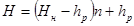
где 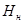
- расстояние от поверхности земли до расчетного уровня грунтовых вод;
п - коэффициент, учитывающий степень уплотнения грунта земляного полотна и длительность стояния расчетного уровня грунтовых вод (принимается по табл. 4).
|
Коэффициент уплотнения грунта Ку |
Продолжительность стояния расчетного уровня грунтовых вод, месяцы |
Коэффициент |
|
0,95 |
До 3 |
0,85 |
|
Более 3 |
0,95 |
|
|
0,98 |
До 3 |
0,8 |
|
Более 3 |
0,9 |
3.18. В северной части V дорожно-климатической зоны на участках с особо ценными поливными землями при невозможности возведения насыпей высотой, требуемой в соответствии с табл. 3, необходимо во избежание зимне-весенних деформаций покрытий предусматривать устройство дополнительного слоя, выполняющего функции морозозащитного и дренирующего слоев, из водо- и морозостойких зернистых материален (песок, гравий, щебень, металлургические и топливные шлаки).
В таких случаях общую толщину дорожной одежды и толщину дополнительного слоя определяют расчетом на морозоустойчивость по методике, изложенной в «Инструкции по проектированию дорожных одежд нежесткого типа» (ВСН 46-72) (М, «Транспорт», 1973).
Испытания дорожных конструкций на морозоустойчивость необходимо проводить также в случаях, когда при 3-м типе местности земляное полотно проектируется в насыпи в соответствии с требованиями табл. 3 из грунтов, склонных к морозному пучению, и разность между расчетным горизонтом грунтовых вод в предзимний период и в период его максимального сезонного стояния менее 0,5 - 1 м, а расчетная глубина промерзания дорожной конструкции более 1 м.
К грунтам, склонным к морозному пучению в условиях V дорожно-климатической зоны, относятся незасоленные глинистые грунты, пески мелкие и пески пылеватые, а также засоленные глинистые грунты, пески мелкие и пески пылеватые со следующими показателями засоления, определяемыми в соответствии с классификацией грунтов по степени и качеству засоления (см. приложение 5):
а) при содержании легкорастворимых солей до 0,5 %;
б) при содовом засолении;
в) при сульфатном засолении с содержанием
легкорастворимых солеи до 1,5 % и отношением 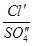
г) при сульфатном засолении с содержанием легкорастворимых солей более 1,5 % и отношением , менее 0,4.
3.19. При 3-м типе местности высоту устанавливают согласно требованиям табл. 2 и 3. При возведении насыпи из привозного грунта ее высоту необходимо назначать сходя из требований, относящихся к привозному грунту.
3.20. При постройке дорог на просадочных лёссовых грунтах рекомендуется увеличивать высоту насыпи на 10 - 15 % с учетом возможной осадки.
4.1. При незаселенных и слабозасоленных грунтах земляное полотно следует проектировать согласно типовым поперечным профилям, предусмотренным «Указаниями по проектированию земляного полотна железных и автомобильных дорог» СН 449-72 (М., Стройиздат, 1973), а при засоленных грунтах - согласно поперечным профилям, предусмотренным для этих грунтов теми же указаниями.
4.2. Поперечные профили земляного полотна, рекомендуемые для различных случаев постройки дороги рядом с оросительными и дренажными сооружениями, показаны на рис. 1 - 4.
4.3. При размещении дорог вдоль закрытых трубчатых дрен или коллекторов целесообразно использовать безрезервный поперечный профиль (рис. 1). В этом случае необходимо при назначении высоты насыпи учитывать понижение уровня грунтовых вод дреной или коллектором (п. 3.11). Расстояние от подошвы насыпи до оси дрены должно быть не менее 3 м, до оси коллектора - не менее 4 м.
4.4. Поперечные профили (рис. 2) следует применять при размещении дорог вдоль каналов из железобетонных лотков.
Рис. 1. Безрезервный поперечный профиль земляного полотна:
1 -
дрена или коллектор, 2 -
уровень грунтовых вод, 3 - расчетное возвышение
низа дорожной одежды над уровнем грунтовых вод
Рис. 2. Поперечные профили земляного полота, устраиваемого из
привозных грунтов (а) и из боковых резервов (б) вдоль каналов
из железобетонных лотков
Поперечный профиль (см. рис. 2, а) рекомендуется предусматривать в условиях стесненной полосы отвода, когда земляное полотно возводится из привозного грунта. При возможности возведения земляного полотна из боковых резервов целесообразно назначать поперечный профиль, указанный на рис. 2, б.
В понижениях, где затруднен поверхностный сток и возможно затопление резервов, рационально между подошвой насыпи и внутренними бровками резервов оставлять бермы шириной до 3 м.
Минимальное расстояние между лотком и подошвой насыпи определяется условиями нормальной эксплуатации автомобильной дороги и канала и должно быть не менее 4 м. Поверхность полосы отвода между лотком и подошвой насыпи 'Планируется с уклоном не менее 20 о/оо в сторону от насыпи.
4.5. Поперечный профиль (рис. 3, а) рекомендуется при размещении дорог вдоль каналов за пределами влияния фильтрационного максимума уровня грушевых вод Расчетным уровнем в этом случае является естественный максимум грунтовых вод. Минимальное допустимое расстояние L между внутренней (по отношению к каналу) бровкой земляного полотна и наивысшей линией уреза воды в канале определяют расположением точки пересечения фильтрационного и естественного максимумов грунтовых вод.
Рис 3. Поперечные профили земляного полотна при
размещении дорог
вдоль каналов за пределами фильтрационного максимума уровня грунтовых
вод (а) и в полосе отвода каната (б):
1
- фильтрационный максимум уровня грунтовых вод, 2 - расчетное
возвышение
низа дорожной одежды над уровнем грунтовых вод, 3 - естественный
максимум уровня грунтовых вод; 4
– канал.
Это расстояние составляет обычно при расходе воды в канале 4 - 6 м3/сек около 15 м, при расходе от 30 до 130 м3/сек - от 60 до 300 м. При этом за точку пересечения условно принимают такую, в которой превышение фильтрационного максимума над естественным уменьшается до 10 - 15 см.
4.6. Поперечный профиль (см. рис 3, б) рекомендуется в случае, когда дорога проходит в полосе отвода канала. Расчетным является фильтрационный максимум уровня грунтовых вод.
При применении этого профиля по сравнению с профилем на рис. 3, а требуется увеличение высоты насыпи, однако при этом достигается экономия земельных площадей
4.7. Обеспечение поверхностного водоотвода решается в каждом конкретном случае индивидуально в процессе проектирования дороги.
4.8. При назначении поперечных профилей (см. рис. 3) необходимо предусматривать устройство водоотводных канав и труб для отвода воды в существующие водотоки, коллекторы и каналы водосбросной сети.
4.9. При возведении земляного полотна одновременно с сооружением ирригационной сети в отдельных случаях допускается совмещать резервы с открытыми дренами и коллекторами глубиной до 2,5 - 3 м (рис. 4). В этом случае обязательно устраивают берму шириной не менее 3 - 4 м между подошвой насыпи и бровкой коллектора, а возвышение низа дорожной одежды над расчетным уровнем грунтовых вод назначают с учетом понижения их уровня коллектором (см. п. 3.11).
Рис. 4 Поперечный профиль земляного полотна, возводимого одновременно с сооружением открытого коллектора:
1
- уровень грунтовых вод; 2 - открытый коллектор, 3 - расчетное
возвышение низа
дорожной одежды над уровнем грунтовых вод
4.10. При возведении земляного полотна из местных грунтов (дальность возки грунта не более 0,5 км) крутизну откосов насыпей, независимо от степени засоления, необходимо принимать в соответствии с указаниями СНиП II-Д.5-72.
4.11. При возведении земляного полотна из привозных грунтов крутизна откосов должна быть не больше следующей:
а) для незаселенных и слабозасоленных грунтов в соответствии с указаниями СНиП II-Д.5-72;
б) для среднезасоленных и сильнозасоленных глин и суглинков всех разновидностей при высоте насыпи менее 2 м - 1:2; при высоте насыпи более 2 - 1:3 в ее нижней части (до 2 м) и 1:2 в верхней;
в) для среднезасоленных и сильнозасоленных мелких и пылеватых песков, а также супесей всех разновидностей при высоте насыпи менее 2 м - 1:3; при высоте насыпи более 2 м - 1:3 в нижней части насыпи (до 2 м) и 1:2 в верхней;
г) при наличии берм - 1:2.
4.12. Крутизну откосов резервов следует назначать не более 1:1,5. Крутизну откосов коллекторов следует принимав в соответствии с требованиями СНиП II-И.3-62.
4.13. Дну резервов придают поперечный уклон 20 о/оо в сторону от насыпи. Продольный уклон дна водоотводных канав, дрен и коллекторов должен составлять не менее 3 о/оо. Когда невозможно обеспечить указанный продольный уклон, земляное полото проектируют с учетом затрудненного водоотвода и с применением соответствующих мероприятий (увеличение высоты насыпи, устройство берм, изолирующих прослоек и т. п.).
4.14. Для лучшего отвода воды из резервов вдоль их внешних краев устраивают на расстоянии 0,5 - 1 м от них продольные лотки. Для защиты водоотводных капав, резервов и коллекторов от затопления оросительными водами устраивают вдоль внешних бровок присыпные защитные валики вы сотой 0,5 - 0,6 м. Воду из водоотводных канав, резервов и коллекторов отводят в существующие водотоки, коллекторы и каналы водосбросной сети, пересекаемые дорогой, с учетом требований органов водного хозяйства
5.1. Расчетные значения модулей упругости грунтов и параметров, определяющих сопротивление грунтов сдвигу - угла внутреннего трения j и удельного сцепления с в районах искусственного орошения рекомендуется принимать по табл. 5.
5.2. При необходимости уточнения сдвиговых характеристик грунтов следует определять значения с и j при расчетной влажности, принимаемой по табл. 1.
|
Грунт |
Тип местности по характеру увлажнения |
||||||||
|
1-й |
2-й |
3-й |
|||||||
|
Е, кгс/см2 |
j, град |
с, кгс/см2 |
Е, кгс/см2 |
j, град |
с, кгс/см2 |
Е, кгс/см2 |
j, град |
с, кгс/см2 |
|
|
Супесь легкая (непылеватая) |
500-400 |
35 |
0,12 |
450-420 |
35 |
0,12-0,11 |
420-390 |
35-34 |
0,11-0,1 |
|
Суглинки и глины |
600-420 |
24-21 |
0,32-0,26 |
420-340 |
21-18 |
0,26-0,19 |
340-280 |
18-15 |
0,19-0,15 |
|
Супеси пылеватые, суглинки пылеватые |
520-380 |
23-20 |
0,31-0,23 |
380-310 |
20-17 |
0,23-0,17 |
310-260 |
17-14 |
0,17-0,13 |
Примечание 1 Большие значения показателей следует принимать для южной части V дорожно-климатической зоны, меньшие - для северной.
2. Расчетные характеристики грунтов, не приведенных в табл. 5, назначают по ВСН 46-72.
3. При устройстве основания из грунтов, укрепленных вяжущими материалами, а также при уплотнении верхнего слоя земляного полотна толщиной 30 - 40 см до коэффициента уплотнения выше 1 значения расчетных характеристик следует принимать на 15 % выше табличных в районах, расположенных южнее линии Кара-Богаз-Гол-Дарваза-Газли-Чимион-Джизак-Ош.
6.1. В условиях близкого залегания грунтовых вод я возможности подтопления земляного полотна поливными и промывными водами особое значение приобретают требования к уплотнению земляного полотна.
При устройстве покрытий капитального типа требуемая плотность грунта составляет 0,98 от максимальной при стандартном уплотнении по всей высоте насыпи.
При устройстве усовершенствованных облегченных, а также переходных покрытий требуемый коэффициент уплотнения составляет 0,95.
Толщина каждого уплотняемого слоя не должна превышать 20 - 25 см, а при применении тяжелых катков на пневматических шинах (50 т) - 30 - 40 см в плотном теле.
6.2. Для достижения требуемой плотности грунты необходимо уплотнять при влажности не ниже 0,9 и не выше 1,1 от оптимальной при стандартном уплотнении. При влажности превышающей указанную, каждый слой грунта после разравнивания должен перед укаткой подвергаться воздушному подсушиванию. При близких грунтовых водах рекомендуется позволить земляное полотно в сезон наибольшего понижения их уровня, обычно во второй половине лета и осенью до начала дождей.
При недостатке влаги в грунте необходимо:
а) проводить земляные работы в зимне-весенний период, что особенно эффективно в районах, где выпадает мало осадков и промерзание незначительно;
б) при невозможности или нецелесообразности проведения в холодное время года всех земляных работ проводить в это время работы на водоразделах, где грунт наиболее быстро теряет влагу;
в) для сохранения влаги в грунте разрыхлять его в осенний период па полосах местности, отведенных для заложения резервов, на глубину 15 - 20 см, а весной по достижении влажностью значения 70 - 75 % от границы текучести проводить боронование и прикатку поверхности резервов легким катком;
г) уплотнять грунт немедленно после отсыпки, не растягивая фронта земляных работ и не допуская пересыхания отсыпанного грунта.
6.3. При возведении насыпи из отвального грунта, разрабатываемого экскаватором (п. 4.3), одновременно с устройством коллектора отсыпка грунта сразу на полную высоту насыпи не допускается. Насыпь отсыпают не менее чем в 2 - 3 приема соответствующим числом экскаваторов, передвигающихся один за другим по берме, причем расстояние между экскаваторами определяют по времени, необходимому для подсушивания и укатки каждого слоя. При этом поперечный профиль коллектора постепенно доводят до проектных размеров.
При необходимости ограничиться одним экскаватором выполняют 2 - 3 последовательных прохода его вдоль участка возводимой насыпи с остановкой после каждого прохода на время, необходимое для просушивания и укатки ранее отсыпанного слоя грунта.
6.4. Рытье дрен и коллекторов следует начинать от места выпуска воды в водоток, существующий сброс или коллектор и производить вверх по уклону. Не следует допускать образования отдельных участков дрен и коллекторов с необеспеченным стоком воды.
6.5. При возведении земляного полотна на просадочных лёссовых грунтах необходимо особо тщательно уплотнять грунт по всей высоте насыпи до плотности не ниже 0,95 - 0,98 от максимальной (в зависимости от типа покрытия, см. п. 6.1.), а также под насыпью на глубину не менее 30 - 40 см до плотности не ниже 0,95, для чего основание насыпи до ее отсыпки предварительно рыхлят, увлажняют до оптимальной влажности и уплотняю.
Перед отсыпкой высоких насыпей на участках пересечения оврагов, балок, промоин и т. п. следует производить замачивание грунтов основания насыпи в соответствии с указаниями СНиП II-Б.2-62 «Основания и фундаменты зданий и сооружений на просадочных грунтах. Нормы проектирования». Устройство покрытий капитального типа в таких случаях необходимо предусматривать на второй год после сооружения земляного полотна.
ПРИМЕР ОПРЕДЕЛЕНИЯ PACЧЕTHOГO УРОВНЯ ГРУНТОВЫХ ВОД
В районе проектируемого участка дороги с близким залеганием грунтовых вод в сходных природных условиях имеется наблюдательная скважина гидрогеологической станции. Длительность ряда наблюдений за колебаниями уровня грунтовых вод n = 13 лет.
При изыскании трассы дороги на данном участке 20 июня уровень грунтовых вод был обнаружен на расстоянии 165 см от поверхности земли. В тот же день на скважине уровень грунтовых вод hскв был зафиксирован на глубине 152 см от поверхности земли.
Необходимо определить расчетный уровень грунтовых вод на проектируемом участке трассы дороги с вероятностью 5 %.
По формуле
найдем
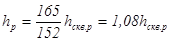
Для определения расчетною значения необходимо по данным ряда наблюдений вычислить среднестатистическую величину и среднеквадратическое отклонение s (см. таблицу).
|
Годы наблюдений |
, м |
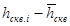 |
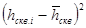 |
|
1 |
1,43 |
-0,27 |
0,0729 |
|
2 |
1,4 |
-0,24 |
0,0576 |
|
3 |
0,95 |
-0,21 |
0,0441 |
|
4 |
0,89 |
0,27 |
0,0729 |
|
5 |
1,26 |
-0,1 |
0,01 |
|
6 |
1,05 |
0,11 |
0,0121 |
|
7 |
0,9 |
0,26 |
0,0676 |
|
8 |
1,31 |
-0,15 |
0,0225 |
|
9 |
1,18 |
-0,02 |
0,0004 |
|
10 |
1,01 |
0,17 |
0,0289 |
|
11 |
1,11 |
0,05 |
0,0025 |
|
12 |
1,32 |
-0,16 |
0,0256 |
|
13 |
1,27 |
-0,11 |
0,0121 |
|
n = 13 |
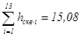 |
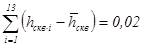 |
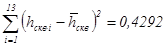 |
Средний уровень грунтовых вод за 13 лет наблюдений будет
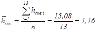
Величина, среднеквадратического отклонения определяется формулой
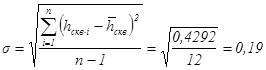
По таблице нормированных отклонений (приложение 2) для п - 1 = 12 при заданной вероятности 5 % t равно 2,18.
Расчетный уровень грунтовых вод в скважине будет
м.
Тогда расчетный уровень грунтовых вод с вероятностью 5 % на проектируемом участке трассы дороги равен
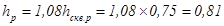
Таблица нормированных отклонений t
|
n-1 |
Вероятность превышения |
n-1 |
Вероятность превышения |
||
|
5 % |
10 % |
5 % |
10 % |
||
|
1 |
12,71 |
6,31 |
17 |
2,11 |
1,74 |
|
2 |
4,3 |
2,92 |
18 |
2,1 |
1,73 |
|
3 |
3,18 |
2,35 |
19 |
2,09 |
1,73 |
|
4 |
2,78 |
2,13 |
20 |
2,09 |
1,73 |
|
5 |
2,57 |
2,02 |
21 |
2,08 |
1,72 |
|
6 |
2,45 |
1,94 |
22 |
2,07 |
1,72 |
|
7 |
2,37 |
1,9 |
23 |
2,07 |
1,71 |
|
8 |
2,31 |
1,86 |
24 |
2,06 |
1,71 |
|
9 |
2,26 |
1,83 |
25 |
2,06 |
1,71 |
|
10 |
2,23 |
1,81 |
26 |
2,06 |
1,71 |
|
11 |
2,2 |
1,8 |
27 |
2,05 |
1,7 |
|
12 |
2,18 |
1,78 |
28 |
2,05 |
1,7 |
|
13 |
2,16 |
1,77 |
29 |
2,04 |
1,7 |
|
14 |
2,15 |
1,76 |
30 |
2,04 |
1,7 |
|
15 |
2,13 |
1,75 |
40 |
2,02 |
1,68 |
|
16 |
2,12 |
1,75 |
60 |
2 |
1,67 |
Значения среднего уклона кривой депрессии в некоторых типичных случаях
Таблица I
Длина участков кривой депрессии (м) с различными средними уклонами (i)
|
Грунт и тип канала |
Верхняя (крутая)
часть |
Средняя часть |
||||||
|
Расход воды в канале, м3/сек |
||||||||
|
100-50 |
50-20 |
20-5 |
<5 |
100-50 |
50-20 |
20-5 |
<5 |
|
|
Пылеватые суглинки, канал в насыпи |
102 |
35 |
25 |
13 |
До |
90 |
52 |
42 |
|
Пылеватые суглинки, канал в полунасыпи-полувыемке |
100 |
70 |
30 |
15 |
Более 100 |
25 |
- |
- |
Таблица 2
|
Грунт и тип канала |
Расход воды в канале, м/сек |
Длина участков, м |
||||||||||
|
Общая |
В том числе при уклонах (i) |
|||||||||||
|
0,6 |
0,5 |
0,4 |
0,3 |
0,2 |
0,1 |
0,05 |
0,03 |
0,02 |
0,01 |
|||
|
Пылеватые cуглинки, канал в насыпи |
100-50 |
102 |
- |
- |
- |
4 |
5 |
10 |
14 |
- |
- |
69 |
|
50-20 |
35 |
- |
- |
3 |
3 |
- |
5 |
6 |
- |
- |
18 |
|
|
20-5 |
25 |
- |
2 |
2 |
- |
- |
3 |
8 |
- |
- |
12 |
|
|
<5 |
13 |
1 |
1 |
- |
- |
- |
2 |
8 |
- |
- |
- |
|
|
Пылеватые cуглинки, канал в полунасыпи-полувыемке |
100-50 |
100 |
- |
- |
- |
- |
- |
2 |
10 |
30 |
30 |
30 |
|
50-20 |
70 |
- |
- |
- |
- |
1 |
3 |
10 |
16 |
20 |
20 |
|
|
20-5 |
40 |
- |
- |
1 |
2 |
- |
- |
8 |
14 |
15 |
- |
|
|
<5 |
15 |
- |
1 |
1 |
- |
- |
10 |
3 |
- |
- |
- |
|
Классификация грунтов
Таблица 1
Классификация глинистых грунтов
|
Виды грунтов |
Разновидности грунтов |
Содержание песчаных
частиц |
Число пластичности |
|
Супесь |
Легкая крупная |
> 50 |
1 £ Wп£ 7 |
|
Легкая |
> 50 |
||
|
Пылеватая |
20-50 |
||
|
Тяжелая пылеватая |
< 20 |
||
|
Суглинок |
Легкий |
> 40 |
|
|
Легкий пылеватый |
< 40 |
7 £ Wп£ 12 |
|
|
Тяжелый |
> 40 |
12 < Wп£ 17 |
|
|
Тяжелый пылеватый |
< 40 |
||
|
Глина |
Песчанистая |
> 40 |
|
|
Пылеватая |
Меньше, чем
пылеватых размером |
17 < Wп£ 27 |
|
|
Жирная |
Не нормируется |
> 27 |
_____________
* Для супесей легких крупных учитывается содержание частиц размером 2 - 0,25 мм.
Таблица 2
Классификация крупнообломочных и песчаных грунтов
|
Грунты |
Содержание частиц,
% от общего веса |
|
Крупнообломочные |
|
|
Глыбовый (при преобладании окатанных камней - валунный) |
Крупнее 200 мм более 50 % |
|
Щебенистый (при преобладании окатанных частиц - галечниковый) |
Крупное 10 мм более 50 % |
|
Дресвяный (при преобладании окатанных частиц - гравийный) |
Крупнее 2 мм более 50 % |
|
Песчаные |
|
|
Песок гравелистый |
Крупнее 2 мм более 25 % |
|
крупный |
Крупнее 0,5 мм более 50 % |
|
средней крупности |
Крупнее 0,25 мм более 50 % |
|
мелкий |
Крупнее 0,1 мм более 75 % |
|
пылеватый |
Крупнее 0,1 мм менее 75 % |
Характеристика грунтов по степени и качественному характеру засоления
Степень засоления грунтов характеризуется средины суммарным содержанием легкорастворимых солей в слое грунта, подлежащего перемещению в насыпь (выраженным в процентах от веса сухого грунта).
Качественный характер засоления характеризуется отношением содержания в грунте ионов Сl¢, выраженного в миллиэквивалентах на 100 г сухого грунта, к содержанию попов SO4¢¢.
Засоленные грунты классифицируются по степени и качественному характеру засоления согласно табл. 1 и 2.
|
Грунты |
Среднее суммарное
содержание легкорастворимых |
|||
|
Хлоридное и
сульфатно- |
Сульфатное,
хлоридно- |
|||
|
V дорожно-климатич. зона |
остальные зоны |
V дорожно-климатич. зона |
остальные зоны |
|
|
Слабозасоленные |
0,5-2 |
0,3-1 |
0,5-1 |
0,3-0,5 |
|
Среднезасоленные |
2-5 |
1-5 |
1-3 |
0,5-2 |
|
Сильнозасоленные |
5-10 |
5-8 |
3-8 |
2-5 |
|
Избыточнозасоленные |
> 10 |
> 8 |
> 8 |
> 5 |
|
Характер засоления грунта |
Отношение |
|
Хлоридное |
> 2,5 |
|
Сульфатно-хлоридное |
2,5-1,5 |
|
Хлоридно-сульфатное |
1,5-1 |
|
Сульфатное |
< 1 |
|
Содовое* |
- |
___________________
* Засоление называется содовым при содержании в грунте ионов СO3¢¢ и НСО3¢ свыше одной трети суммарного содержания ионов Сl¢ и SO4¢¢.
Возможность использования засоленных грунтов для возведения земляного полотна устанавливается в зависимости от степени и качественного характера засоления грунта легкорастворимыми солями согласно табл. 3
|
Грунты |
Пригодность для
возведения |
|
Слабозасоленные |
Пригодны |
|
Среднезасоленные |
Пригодны |
|
Сильнозасоленные |
Пригодны с дополнительными мероприятиями* |
|
Избыточнозасоленные |
Не пригодны |
_____________
*Дополнительные мероприятия заключаются в повышении устойчивости земляного полотна и предохранении его верхней части от дальнейшего засоления увеличением высоты насыпи, устройством изолирующих прослоек, понижением уровня грунтовых вод с помощью дренажа и т. п.
СОДЕРЖАНИЕ
|
1 Районирование территории орошаемой зоны при проектировании дорог 2 Размещение пороги в орошаемой местности 4 Поперечные профили земляного полотна |
|
|
Пример определения расчетного уровня грунтовых вод |
|
|
Таблица нормированных отклонений t |
|
|
Значения среднего уклона кривой депрессии в некоторых типичных случаях |
|
Классификация грунтов |
|
|
Характеристика грунтов по степени и качественному характеру засоления |
|